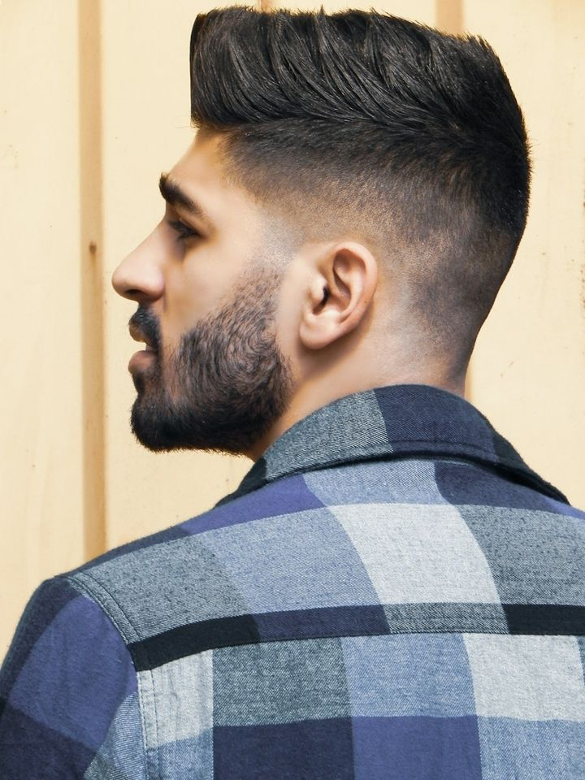
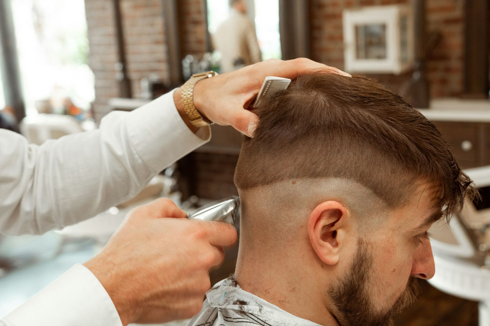
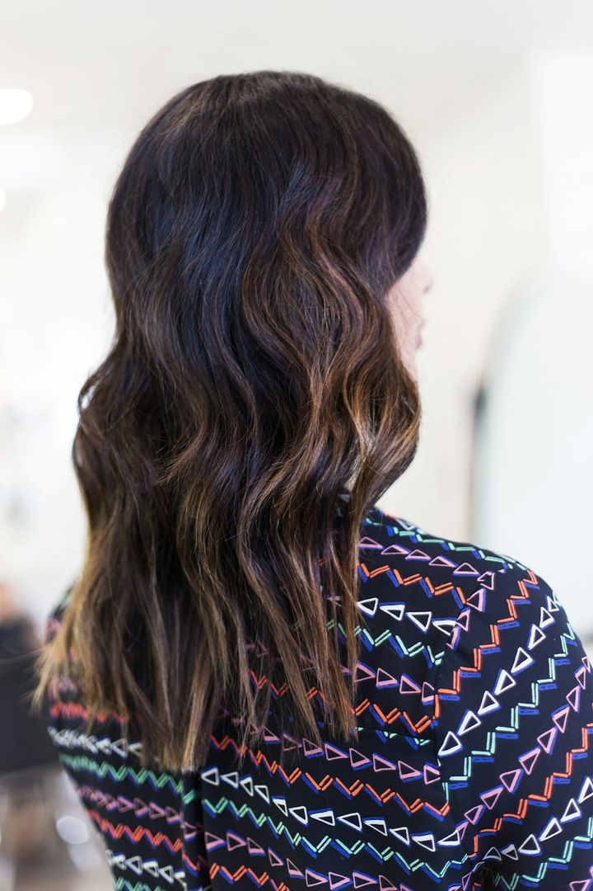
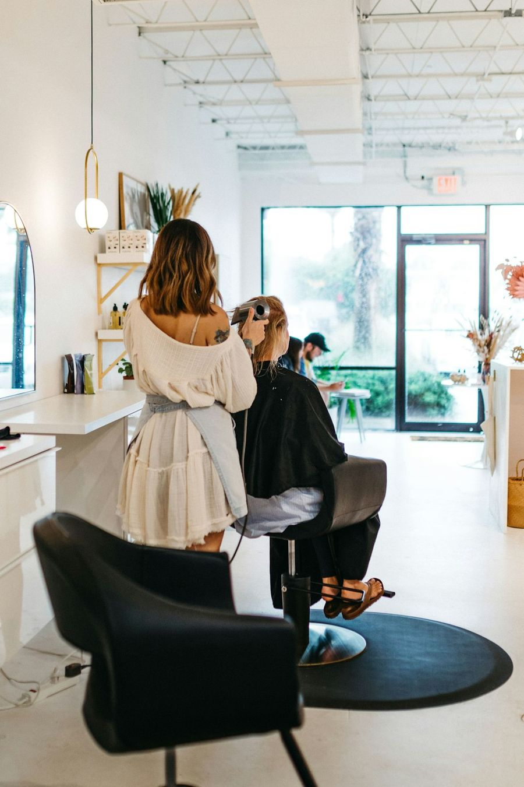

Skin Fade
Bare at the sides, blended by hand into whatever length you keep on top. Crisp from every angle, including the back of your head.

Hair salon & barbershop · Southeast Portland
Precision cutting, hand-painted color and straight-razor finishes from a team that asks how you actually wear your hair before anyone picks up the shears.
Signature cuts & styles
Six cuts we do every single day — each shaped to your texture, your growth patterns and the time you really give your hair in the morning.

Bare at the sides, blended by hand into whatever length you keep on top. Crisp from every angle, including the back of your head.
Point-cut length up top over a soft taper, styled forward and up so the lift lasts from the morning commute to dinner.
A blunt, jaw-skimming line, cut dry for accuracy, with bangs tailored to your brow line and your frames.
Soft, piecey layers and face-framing bangs that grow out gracefully — air-dry friendly, no round brush required.

Hand-painted brightness that melts into your natural root, so the grow-out looks intentional instead of overdue.
Cut dry, curl by curl, to build a rounded shape that springs instead of puffs — and keeps its form between visits.
Why clients stay
We would rather earn your second visit than rush your first. These are the promises every chair keeps, on both sides of the shop.
Every first visit starts with ten unhurried minutes at the mirror: your hair history, your routine and the photos you saved.
Each stylist trains in dry curl cutting and precision wet cutting, so straight, wavy, curly and coily hair are all home turf.
Lived with it for a few days and something feels off? Come back within a week and we'll adjust it, free of charge.
Appointments are booked with real buffer time. If we keep you waiting more than 15 minutes, your next add-on is on us.

Your first visit
No guesswork and no surprises — here is exactly how an appointment unfolds.
Pick a service, a professional (or "no preference") and a time that suits you.
We look at your hair dry, ask how you style it, and agree on length, shape and upkeep before anything is cut.
A scalp-massage shampoo, then the work itself — with check-ins along the way, not a big reveal.
We style it the way you will at home, show you the one or two products that matter, and note when to come back.
Client reviews
We ask every client how we did once the cape comes off. Here's what a few regulars from both sides of the shop told us.
★★★★★
I've had curly hair for thirty-four years, and this is the first cut I haven't gone home and fixed. Elena cut it dry, curl by curl, and explained every step. Three months on, it still holds its shape.
4.9/ 5
★★★★★
Average from 640+ client reviews since we opened in 2015.
★★★★★
Walked in on a Tuesday lunch break and was back at my desk in forty minutes with the cleanest fade I've ever had. Mateo even tamed the crown my last barber gave up on.
★★★★★
Four months of grow-out and my balayage still looks deliberate. Hannah saved my formula, so my second appointment took half the time.
★★★★★
The hot-towel shave is the best forty minutes of my month. I brought my whole groom's crew to Dorian before the wedding, and every one of them has been back since.
Choose a time that works for you — we'll handle the rest, right down to the final mirror check.